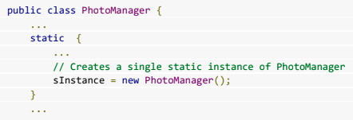
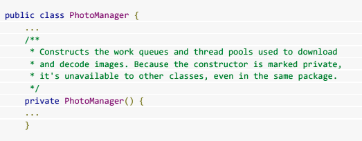
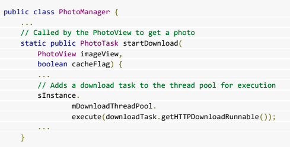
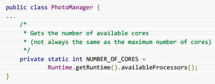
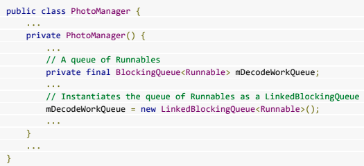
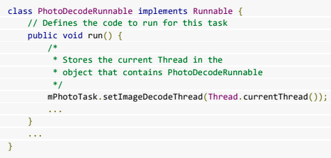
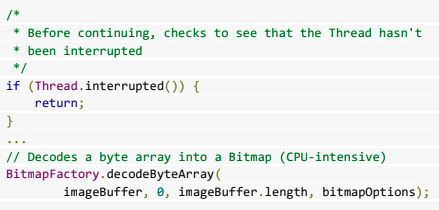

Creando un administrador para múltiples Hilos
30 de Noviembre del 2020
- Procesos y Subprocesos
- Creando un administrador para múltiples Hilos
- Información sobre las tareas y pila de actividades
¿Que se necesita?
Definir la clase del grupo de subprocesos
ThreadPoolExecutor

Usar un constructor privado
Hacer que el constructor sea privado asegura que sea un singleton, lo que significa que no tiene que encerrar accesos a la clase en un bloque sincronizado.
Comience sus tareas llamando a métodos en la clase de grupo de subprocesos,defina un método en la clase de grupo de subprocesos que agrega una tarea a la cola de un grupo de subprocesos.

Determinar los parámetros del grupo de subprocesos
Para instanciar aThreadPoolExecutor, necesita los siguientes valores:

Una cola de tareas
La cola de entrada de la que ThreadPoolExecutor toma objetos Runnable. Para iniciar el código en un subproceso, un administrador de grupo de subprocesos toma un objeto ejecutable de una cola de primero en entrar, primero en salir y lo adjunta al subproceso
. Crear un grupo de Hilos
Ejecutar código en un subproceso de grupo de subproceso
Cuando un hilo está disponible, el ThreadPoolExecutor toma una tarea de la cola y la ejecuta en el hilo.
Por ejemplo:
Si está descargando imágenes de la red y utilizando un caché, probablemente desee detener una tarea si detecta que una imagen ya está presente en el caché. Dependiendo de cómo escriba su aplicación, es posible que no pueda detectar esto antes de iniciar la descarga.
Ejecutar una tarea en un hilo del grupo de hilos
Interrumpir código en ejecución
Para detener una tarea, debe interrumpir el hilo de la tarea. Para prepararse para hacer esto, necesita almacenar un identificador para el hilo de la tarea cuando crea la tarea. Por ejemplo:
En la mayoría de los casos, Thread.interrupt () detiene el hilo inmediatamente. Sin embargo, solo detiene los subprocesos que están esperando y no interrumpirá las tareas de la CPU o de la red. Para evitar ralentizar o bloquear el sistema, se aprueba las solicitudes de interrupción pendientes antes de intentar una operación: